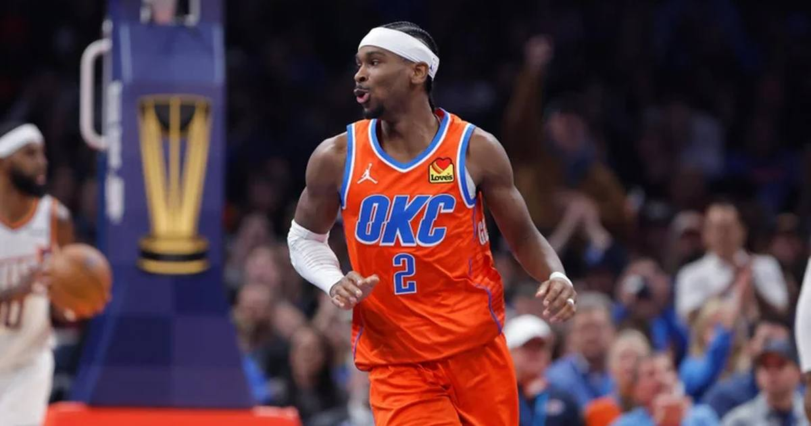

TSL Bets parlay: Nikola Jokic OVER 24.5 points + Shai Gilgeous-Alexander OVER 30.5 points (~+300)
Two props, two scoring stars. Nikola Jokic OVER 24.5 points (-105) at home against a Boston frontcourt with no answer for him, plus Shai Gilgeous-Alexander OVER 30.5 points (+104) at home against Atlanta — about +300 combined.

The game slips
Boston Celtics (11-3) at Denver Nuggets (7-5)
Wednesday, 9:30 PM ET — Ball Arena, Denver (ESPN)
• Spread: Celtics -2.5 (-110)
• Total: 219.5 (-110)
• Moneyline: Celtics -142 / Nuggets +120
• Odds source: DraftKings via Bleacher Nation, November 18
Injury report — Celtics: No players on the injury report. Jayson Tatum (26.5 PPG) and Paul George are playing.
Injury report — Nuggets: G Julian Strawther OUT (left knee sprain). G Jamal Murray and F Aaron Gordon are both available.
Storylines: Jokic put up 28 points, 15 rebounds and 7 assists on Monday against Phoenix, and he is averaging 24.1 points, 10.9 rebounds and 8.9 assists a game. Boston's center options are Neemias Queta, Mitchell Robinson and Luka Garza, and Jokic went for 30 points and 12 rebounds the last time he hosted Boston. He has cleared 35.5 points plus rebounds in five of his last six games. Both teams are coming off home losses on Monday — Boston fell 115-105 to Orlando, its first home loss, and Denver lost 117-105 to Phoenix. Tatum leads Boston at 26.5 points a game; Murray leads Denver at 26.1.
Atlanta Hawks (8-6) at Oklahoma City Thunder (9-5)
Wednesday, 8:00 PM ET — Paycom Center, Oklahoma City
• Spread: Thunder -7.5
• Total: 227.5
• Moneyline: Thunder -243 / Hawks +237
• Odds source: MoneyLine Sports API and Bleacher Nation, November 18
Injury report — Thunder: C Chet Holmgren OUT (right knee injury recovery). F Jalen Williams OUT (left ankle surgery). G Cason Wallace OUT (left shoulder surgery). C Thomas Sorber OUT (right knee surgery). F Jaylin Williams questionable (low back spasms).
Injury report — Hawks: G CJ McCollum OUT (left calf strain). C Jock Landale OUT (right hip inflammation). G Kingston Flemings OUT (lumbar strain). F Mouhamed Gueye OUT (left foot fracture). F Asa Newell OUT (left great toe surgery). C Henri Veesaar OUT (right ACL tear). F Rafael Castro doubtful (two-way G League assignment). G Trae Young is playing.
Storylines: The Thunder are 5-0 at home and 7.5-point favorites. Gilgeous-Alexander is averaging 30.9 points a game and 33.4 over his last seven, and with Holmgren still out he remains Oklahoma City's offensive focal point. Atlanta allows 116.1 points a game, and the Hawks are missing six players of their own — including McCollum, their second scorer.
The bet
2-leg parlay (~+300): Nikola Jokic OVER 24.5 points (-105, Fanatics) + Shai Gilgeous-Alexander OVER 30.5 points (+104, best price Splash Sports via OPTIMAL)
Updated 7:40 PM ET: Cade Cunningham is questionable tonight with right knee soreness, so the Cade Cunningham OVER 24.5 leg is out and Nikola Jokic OVER 24.5 is in. The Gilgeous-Alexander leg is unchanged. The swap was made before either game tipped.
Why these legs
Both legs are props with real matchup edges. Jokic scored 28 on Monday, has cleared 35.5 points plus rebounds in five of his last six, and faces a Boston center rotation of Queta, Robinson and Garza — the softest frontcourt matchup on the board tonight. The line is 24.5 at -105. OPTIMAL projects Gilgeous-Alexander for 30.6 points at home against an Atlanta team giving up 116.1 a game, and he has gone over 30.5 in 5 of his last 10 while averaging 33.4 over his last seven.
Neither leg depends on the other — different games, different teams, different defenses. Both are plus-money or near it, so the parlay pays about +300 instead of the chalky +150 you get from stacking favorites. That is the juice rule working as intended: two real edges, one ticket.
The honest caveats
Jokic's season average (24.1) and his career mark against Boston (23.1) both sit below 24.5 — this is a matchup and form play, not a season-average edge, and one projection has him at 24.4, a hair under the line. Gilgeous-Alexander's models disagree with each other: one has him at 29 points tonight, below the line, even as his last-seven average says over. Boston is favored in Denver, so a Celtics run could cut Jokic's late minutes, and a blowout in Oklahoma City could do the same to Gilgeous-Alexander. A parlay needs both legs, and either one can sink it alone.
The record
TSL Bets is 21-34 in November, 25-55 all-time.
If you or someone you know has a gambling problem, call 1-800-GAMBLER.
Sources
• Nikola Jokic Props Today (BetMGM)
• Celtics vs Nuggets Odds (Bleacher Nation)
• Jokic Over 24.5 points -105 (Action Network / Fanatics)
• Shai Gilgeous-Alexander Projections & Betting Odds (OPTIMAL)